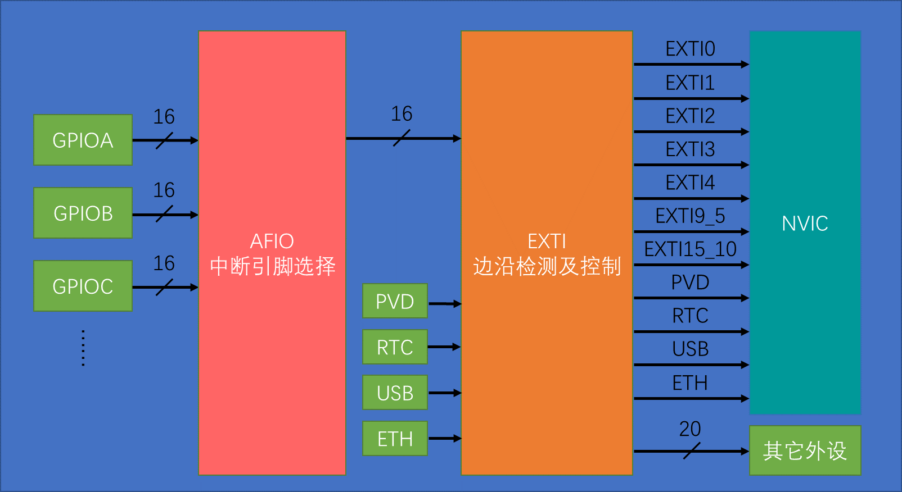

EXTI 外部中断
中断系统
中断：在主程序运行的过程中，出现特定的触发条件，使CPU暂停当前运行的程序去处理中断程序，处理完成后继续原来的工作。
中断优先级：当有多个中断源同时申请中断时，CPU会根据中断源的轻重缓急进行裁决，优先响应更加紧急的中断源。
中断嵌套：当一个中断程序正在运行时，又有新的更高优先级的中断源申请中断，CPU再次暂停当前中断程序，转而去处理新的中断程序，处理完成后依次进行返回。
注意事项：
1.在中断函数里，尽量不要执行耗时过长的代码。
2.尽量不要在中断函数和主函数调用相同的函数，或操作同一个硬件。可以在中断里操作变量或标志位作为接口来返回参数。
NVIC中断控制器
NVIC的中断优先级由优先级寄存器的4位（0~15）决定，这4位可以进行切分，分为高n位的抢占优先级和低4-n位的响应优先级。
抢占优先级高的可以中断嵌套，响应优先级高的可以优先排队，抢占优先级和响应优先级均相同的按中断号排队。
| 分组方式 |
抢占优先级 |
响应优先级 |
| 分组0 |
0位，取值为0 |
4位，取值为0~15 |
| 分组1 |
1位，取值为0~1 |
3位，取值为0~7 |
| 分组2 |
2位，取值为0~3 |
2位，取值为0~3 |
| 分组3 |
3位，取值为0~7 |
1位，取值为0~1 |
| 分组4 |
4位，取值为0~15 |
0位，取值为0 |
EXTI 外部中断
EXTI外部中断可以监测指定IO的电平信号向NVRC发出申请中断，支持上升沿、下降沿、双边沿、软件触发，支持所有GPIO但是相同的Pin不能同时触发。
通道数：16个GPIO_Pin，外加PVD输出、RTC闹钟、USB唤醒、以太网唤醒
触发响应方式：中断响应（正常执行中断程序），事件响应（中断触发别的外设事件）
AFIO复用IO口
AFIO主要用于引脚复用功能的选择和重定义。
在STM32中，AFIO主要完成两个任务：复用功能引脚重映射、中断引脚选择。
EXTI结构图

配置EXTI外部中断
第一步：配置RCC。使能GPIO、AFIO的时钟。
第二步：配置GPIO。浮空/上拉/下拉输出。
第三步：配置AFIO。指定AFIO的中断原和中断线。
第四步：配置EXTI。指定EXTI的中断线、响应方式、触发方式。
第五步：配置NVIC。中断分组，指定中断通道、抢占优先级、响应优先级。
第六步：配置中断函数。一般先进行中断标志位判断，在写中断程序，最后清除中断标志位。
常用函数
AFIO
AFIO和GPIO的库函数在同一个文件内。
1
2
3
4
5
6
7
8
9
10
11
12
13
|
void GPIO_AFIODeInit(void);
void GPIO_PinLockConfig(GPIO_TypeDef* GPIOx, uint16_t GPIO_Pin);
void GPIO_EventOutputConfig(uint8_t GPIO_PortSource, uint8_t GPIO_PinSource);
void GPIO_EventOutputCmd(FunctionalState NewState);
void GPIO_PinRemapConfig(uint32_t GPIO_Remap, FunctionalState NewState);
void GPIO_EXTILineConfig(uint8_t GPIO_PortSource, uint8_t GPIO_PinSource);
void GPIO_ETH_MediaInterfaceConfig(uint32_t GPIO_ETH_MediaInterface);
|
EXTI
1
2
3
4
5
6
7
8
9
10
11
12
13
14
15
16
|
void EXTI_DeInit(void);
void EXTI_Init(EXTI_InitTypeDef* EXTI_InitStruct);
void EXTI_StructInit(EXTI_InitTypeDef* EXTI_InitStruct);
void EXTI_GenerateSWInterrupt(uint32_t EXTI_Line);
FlagStatus EXTI_GetFlagStatus(uint32_t EXTI_Line);
void EXTI_ClearFlag(uint32_t EXTI_Line);
ITStatus EXTI_GetITStatus(uint32_t EXTI_Line);
void EXTI_ClearITPendingBit(uint32_t EXTI_Line);
|
NVIC
1
2
3
4
5
6
7
8
9
10
|
void NVIC_PriorityGroupConfig(uint32_t NVIC_PriorityGroup);
void NVIC_Init(NVIC_InitTypeDef* NVIC_InitStruct);
void NVIC_SetVectorTable(uint32_t NVIC_VectTab, uint32_t Offset);
void NVIC_SystemLPConfig(uint8_t LowPowerMode, FunctionalState NewState);
void SysTick_CLKSourceConfig(uint32_t SysTick_CLKSource);
|
中断函数
在STM32中中断函数的名字都是固定的，每个中断通道都对应一个中断函数，中断函数见启动文件。IRQHandler类。
一般先进行中断标志位判断，在写中断程序，最后清除中断标志位。如果不清除中断标志位就会一至申请中断，影响主程序运行。
中断函数无参无返回值,不需要进行声明。
示例程序
按键计次
1
2
3
4
5
6
7
8
9
10
11
12
13
14
15
16
17
18
19
20
21
22
23
24
25
26
27
28
29
30
31
32
33
34
35
36
37
38
39
40
41
42
43
44
45
46
47
48
49
50
51
52
53
54
55
56
57
58
59
60
61
62
63
64
65
66
| uint16_t CountSensor_count;
int main(void)
{
RCC_APB2PeriphClockCmd(RCC_APB2Periph_GPIOB,ENABLE);
RCC_APB2PeriphClockCmd(RCC_APB2Periph_AFIO,ENABLE);
GPIO_InitTypeDef GPIO_InitStruct;
GPIO_InitStruct.GPIO_Mode = GPIO_Mode_IPU;
GPIO_InitStruct.GPIO_Pin = GPIO_Pin_14;
GPIO_InitStruct.GPIO_Speed = GPIO_Speed_50MHz;
GPIO_Init(GPIOB,&GPIO_InitStruct);
GPIO_EXTILineConfig(GPIO_PortSourceGPIOB,GPIO_PinSource14);
EXTI_InitTypeDef EXTI_InitStruct;
EXTI_InitStruct.EXTI_Line = EXTI_Line14;
EXTI_InitStruct.EXTI_LineCmd = ENABLE;
EXTI_InitStruct.EXTI_Mode = EXTI_Mode_Interrupt;
EXTI_InitStruct.EXTI_Trigger = EXTI_Trigger_Falling;
EXTI_Init(&EXTI_InitStruct);
NVIC_PriorityGroupConfig(NVIC_PriorityGroup_2);
NVIC_InitTypeDef NVIC_InitStruct;
NVIC_InitStruct.NVIC_IRQChannel = EXTI15_10_IRQn;
NVIC_InitStruct.NVIC_IRQChannelCmd = ENABLE;
NVIC_InitStruct.NVIC_IRQChannelPreemptionPriority = 1;
NVIC_InitStruct.NVIC_IRQChannelSubPriority = 1;
NVIC_Init(&NVIC_InitStruct);
OLED_Init();
OLED_Clear();
OLED_ShowString(1,1,"Count:");
while(1)
{
OLED_ShowNum(1,7,CountSensor_count(),5);
}
}
void EXTI15_10_IRQHandler(void)
{
if(EXTI_GetITStatus(EXTI_Line14) == SET)
{
Delay_ms (20);
if (GPIO_ReadInputDataBit(GPIOB, GPIO_Pin_14) == 0)
{
CountSensor_count ++;
}
EXTI_ClearITPendingBit(EXTI_Line14);
}
}
|
正交编码器计次
1
2
3
4
5
6
7
8
9
10
11
12
13
14
15
16
17
18
19
20
21
22
23
24
25
26
27
28
29
30
31
32
33
34
35
36
37
38
39
40
41
42
43
44
45
46
47
48
49
50
51
52
53
54
55
56
57
58
59
60
61
62
63
64
65
66
67
68
69
70
71
72
73
74
75
76
77
78
79
80
81
82
83
84
85
86
87
88
89
90
91
92
93
94
95
96
| uint16_t CountSensor_count;
int main(void)
{
RCC_APB2PeriphClockCmd(RCC_APB2Periph_GPIOB,ENABLE);
RCC_APB2PeriphClockCmd(RCC_APB2Periph_AFIO,ENABLE);
GPIO_InitTypeDef GPIO_InitStruct;
GPIO_InitStruct.GPIO_Mode = GPIO_Mode_IPU;
GPIO_InitStruct.GPIO_Pin = GPIO_Pin_0 | GPIO_Pin_1;
GPIO_InitStruct.GPIO_Speed = GPIO_Speed_50MHz;
GPIO_Init(GPIOB,&GPIO_InitStruct);
GPIO_EXTILineConfig(GPIO_PortSourceGPIOB,GPIO_PinSource0);
GPIO_EXTILineConfig(GPIO_PortSourceGPIOB,GPIO_PinSource1);
EXTI_InitTypeDef EXTI_InitStruct;
EXTI_InitStruct.EXTI_Line = EXTI_Line0 | EXTI_Line1;
EXTI_InitStruct.EXTI_LineCmd = ENABLE;
EXTI_InitStruct.EXTI_Mode = EXTI_Mode_Interrupt;
EXTI_InitStruct.EXTI_Trigger = EXTI_Trigger_Falling;
EXTI_Init(&EXTI_InitStruct);
NVIC_PriorityGroupConfig(NVIC_PriorityGroup_2);
NVIC_InitTypeDef NVIC_InitStruct;
NVIC_InitStruct.NVIC_IRQChannel = EXTI0_IRQn;
NVIC_InitStruct.NVIC_IRQChannelCmd = ENABLE;
NVIC_InitStruct.NVIC_IRQChannelPreemptionPriority = 1;
NVIC_InitStruct.NVIC_IRQChannelSubPriority = 1;
NVIC_Init(&NVIC_InitStruct);
NVIC_InitStruct.NVIC_IRQChannel = EXTI1_IRQn;
NVIC_InitStruct.NVIC_IRQChannelCmd = ENABLE;
NVIC_InitStruct.NVIC_IRQChannelPreemptionPriority = 1;
NVIC_InitStruct.NVIC_IRQChannelSubPriority = 2;
NVIC_Init(&NVIC_InitStruct);
OLED_Init();
OLED_Clear();
OLED_ShowString(1,1,"Count:");
while(1)
{
int16_t Num = 0;
OLED_ShowNum(1,7,Num + CountSensor_Get(),5);
Delay_ms (100);
}
}
int16_t CountSensor_Get(void)
{
int16_t Temp;
Temp = CountSensor_count;
return Temp ;
}
void EXTI0_IRQHandler(void)
{
if(EXTI_GetITStatus(EXTI_Line0) == SET)
{
if(GPIO_ReadInputDataBit(GPIOB ,GPIO_Pin_1) == 0)
{
CountSensor_count --;
}
EXTI_ClearITPendingBit(EXTI_Line0);
}
}
void EXTI1_IRQHandler(void)
{
if(EXTI_GetITStatus(EXTI_Line0) == SET)
{
if(GPIO_ReadInputDataBit(GPIOB ,GPIO_Pin_0) == 0)
{
CountSensor_count ++;
}
EXTI_ClearITPendingBit(EXTI_Line1);
}
}
|
 微信
微信 支付宝
支付宝